Вечер 1
Забудьте вчерашний приказ
Решить, что делать с приказом, который куратор просит забыть, начать обход домов и посмотреть на Нижние двери Палаты в час, когда их не велено смотреть.
Открыть сценарий →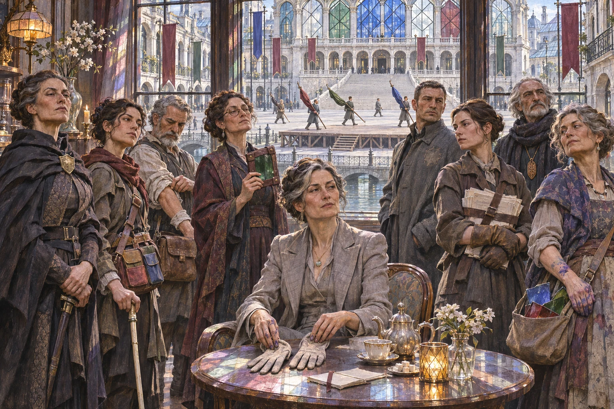
Неделя до Возвращения знамён: последние полки входят в стеклянную столицу Витраж, и площадь каждый день репетирует праздник. Вы — обходная группа. По старому обычаю вы обходите шесть домов города — армию, Белую нить, Палату, резерв, причалы и «Третью дверь»; дом, который вас примет, отдаёт вам своё цветное стекло — слово, что выйдет на праздник. На рассвете после ночи знамён вы прочтёте с балкона Палаты, кому полки отдают знамёна. Вчера куратор из Белой нити дала вам приказ. Сегодня она просит его забыть, а лист всё ещё у вас в руках. Кто выйдет на улицы в ночь знамён, кто встанет у дверей Палаты и кто будет стрелять — решит ваш обход.
Перед чтением вступления сверьте место героев, присутствующих людей и предметы с итогом прошлого вечера. Если условия встречи отпали, сыграйте последствия там, где находится партия. Событие по расписанию может произойти за кадром. Герои узнают о нём от тех, кто был на месте.
В три часа Карх читает список. Назовите лишь тех, кого он может застать. У выведенных депутатов спросите, останутся ли они в укрытии или придут к площади. Дальше ведите часы по реальному держателю листа и контролю дверей.
Отказываемся работать на Палату. В Седьмую комнату не идём. Выведем тех, кто хочет уйти с причалов. Сажаем в лодки тех, кто сам сошёл к воде. Комендант запирает Палату по своему плану. В лодке оказываются лишь откликнувшиеся; их имена остаются у рулевого.
Обойдём двери по забываемому приказу, запишем, кто сменил посты. Доступные свидетельства — Приказ, который просят забыть, Двери без обхода. Приказ Кассии оставил Нижние двери без обхода. Люди Карха уже пользуются этим проходом. Показываем приказ тем, кто отвечал за обход. Проверяем цепочку приказов со старшими причалов. Предупреждение расходится раньше знаменосцев; обнародование имён требует решения самих людей.
Отряд теряет угол Медного спуска, связной не проходит. Предупреждаем оставшихся у пристани депутатов по именам. Предупреждаем ближайших депутатов лично, остальных вычёркиваем из списка подтверждённых. Палата получает неполное предупреждение.
Для игры без подготовки: что говорят люди, места в стороне от главной дороги и прохожие. Пометки о правде слухов — только для ведущего; сказанное за столом становится фактом мира, лишь когда вы его подтвердите.
«Обходную группу всегда берут со стороны — ни из кабинета, ни из полков. Чтобы на рассвете читали те, кому поверят все дома».
Правда. Это обычай обхода из правды мира. Слух объясняет, почему каждый дом взвешивает героев и хочет, чтобы они прочли именно его текст. Годится с первого вечера, ничего не раскрывает.
«Кто увидит, как на Галерее зелёное и красное горят разом, тот до следующего Возвращения не женится. Мой дядя видел — и вот, холостой».
Неправда. Городское суеверие, к сигналам Галереи отношения не имеет. Удобная реплика для толпы на площади в вечера репетиций, когда рамы пробуют все стёкла подряд.
«У Нижних дверей Палаты в этом году поста Нити нет. Почётную стражу прислал Знамённый двор, а служители только глаза отводят».
Правда. Так и есть: это видно на обходе в 18:00 вечера 1, а Юла знает, что стражу прислал Знамённый двор. Что лежит в ящиках и чей приказ снял пост, слух не говорит.
«Ящики для иллюминации в подвал Палаты носят целую неделю. Говорят, генерал готовит городу такие огни, каких Витраж ещё не видел».
Отчасти правда. Ящики правда носят в подвал, но в них плащи и арбалеты дверной команды Карха, а не стекло. Таисия узнаёт это по весу в вечер 1, носильщики Гелены жалуются на вес в вечер 2.
«Белая нить сквозь своё молочное стекло мысли читает. Посмотрит на тебя — и знает, что ты думал вчера вечером».
Неправда. Неправда: стёкла не читают мыслей и не управляют людьми, сквозь цветное стекло видно только строки тех же чернил. Слух хорошо показывает, как город боится Нити; развеять его может Тера или любой писарь.
«Дом складок писем не теряет, это всякий знает. Он их только иногда отдаёт не тем — то и дело слышишь».
Правда. Фабиан за неделю уже дважды путал полку «7», и в вечер 4 отряду достанется чужой пакет. Слух лишь готовит почву: до вечера 4 он ничего не объясняет.
«Канцлер, говорят, сама уходит — устала. Только кто же уходит в ночь знамён, когда весь город стоит на площади?»
Отчасти правда. Отставка с полуночи ночи знамён и правда подписана, но не по усталости: Северина отдала её Орену за молчание о своих военных подписях. Так думает Богдан (вечер 3); правда открывается в Малой ротонде в вечер 5.
«На пристани решает навес, а не старшие. Гелена хоть двадцать лет ящики таскает, а без собрания и мешка с места не сдвинет».
Правда. Обычай Медной пристани из описания места. Помогает сыграть Гелену: она слушает до конца и отсылает к собранию, а носильщики под навесом слышат каждое слово героев.
«Синие бани — для тех, кого Нить уже записала. Кто туда вошёл, тот назад не выходит, и больше его в городе никто не видел».
Неправда. Перевёрнутая правда: через бани Иветта Сомм выводит из города тех, кому нужно уехать, и люди не пропадают, а уезжают. Слух ведёт в Синие бани, где героев и правда ждут (вечера 1 и 6).
«Генерал на своём дворе всех встречает как родных: воды нальёт, стул в тень поставит и непременно привет кому-нибудь передаст».
Правда. Учтивость Знамённого двора: Орен и его люди принимают обходную группу за посланцев Кассии. Слух указывает на вечер 1 и не раскрывает, кому привет и почему.
«Резерву арбалеты не для праздника выдали. Генерал хочет, чтобы в ночь знамён пекари с переплётчиками стреляли за него».
Отчасти правда. Арбалеты выданы для караула праздника. Энну звали обе стороны: Орен — поддержать движение частей, Кассия — держать порядок с правительством, и она не ответила ни одной. Против кого выйдет резерв, решают стёкла и сделки стола.
«С балкона Палаты голос без всякого рупора слышно у самого канала. Так его и строили, чтобы на рассвете каждый услышал, кому знамёна».
Правда. Правда из описания балкона. Напоминает столу, что чтение в 05:00 ночи знамён услышит весь город и повторить его нельзя.
Каменная скамья под Галереей возвращения, на которой с утра до ночи сидят ученицы толковательниц рам с толстыми тетрадями на коленях. Они записывают каждый сигнал: час, цвет, сколько горело. Обычай велит той, кто первой увидит новый цвет, крикнуть его вслух, и площадь узнаёт новость раньше глашатая. Край скамьи весь в цветных пятнах: здесь пробуют чернила, прежде чем писать.
Тесная лавка в служебном квартале, где по стенам висят стёкла всех цветов и поют от каждого хлопка двери. Стекольщик режет здесь окна для чайных и праздничные пластины для Галереи, а на каждую ставит свою царапину в углу. Стёкол домов он не режет и не продаёт: говорит, что слово не продаётся. У порога стоит ящик с осколками, и покупатели берут оттуда по одному на счастье.
Горбатый мостик через канал в двух шагах от Дома складок, где курьеры ждут смены и делят последние новости. По старой привычке за каждое срочное письмо, доставленное вовремя, курьер завязывает на перилах цветную нитку. Перила давно стали лохматыми и пёстрыми, как ковёр, а нижние нитки выцвели добела. Говорят, если нитку сорвёт ветер, письмо всё-таки ушло не тому.
Боковые ступени Палаты, выходящие в переулок за служебным крылом. Сюда служители в серых сюртуках выходят подышать между заседаниями и молчат: о том, что слышали внутри, на этих ступенях не говорят. Кто нарушит обычай, весь вечер угощает остальных чаем. На нижней ступени выбиты чьи-то инициалы, и никто из служителей не признаётся, чьи.
Медная жаровня торговки каштанами у старого сухого фонтана на площади парадов. В городе так и говорят — «встретимся у каштанов», и здесь всегда кто-то кого-то ждёт. Каштаны заворачивают в кульки из вчерашних листков с новостями, поэтому половина площади читает вчерашний день, облизывая пальцы. В неделю репетиций очередь к жаровне не кончается до темноты.
Короткий тупик за служебным кварталом, где во всех окнах изнутри закрыты ставни, даже днём. Здесь живут старые служащие, ушедшие на покой, и соседи шутят, что эти люди слишком долго смотрели в чужие окна, чтобы открывать свои. В неделю Возвращения ставни здесь не открывают совсем. На углу висит единственный фонарь с простым, бесцветным стеклом.
Молодая ученица толковательниц рам в плаще с вышитыми рамками на рукаве; на щеке след зелёных чернил, тетрадь под мышкой.
«Красное горит дольше всех. Красное всегда горит дольше всех, запомните».
Может рассказать: Сигнал Галереи показывает только, что сообщение прозвучало, а не то, что оно правда; толковательниц учат этому в первый же день.
Седой стекольщик с порезанными пальцами в тонких перчатках без кончиков; на кожаном фартуке блестит стеклянная пыль.
«Стекло не врёт. Врёт тот, кто его держит, и держит не той стороной».
Может рассказать: Зелёный фонарь над воротами резерва застеклён его рукой, и он охотно расскажет, что стекло там самое простое, не казённое.
Немолодой служитель Палаты в сером сюртуке, с тяжёлой связкой ключей на поясе и вечно сонным, неторопливым взглядом.
«Я ничего не слышал. Я служитель, а служители не слышат».
Может рассказать: Любой горожанин может подняться на галерею Палаты во время прений; он покажет боковую лестницу, по которой туда ходят без давки.
Худой курьер в мокром плаще, с сумкой цветных карманов и стоптанными сапогами; дышит так, будто бежит всю жизнь.
«Синий сгиб — срочно, красный — штаб, белый — лично. Остальное — не моё дело».
Может рассказать: В Доме складок письма сортируют по цвету бумажных сгибов, а не по адресу, и любой курьер объяснит, какой сгиб что значит.
Румяная торговка в стёганой безрукавке у медной жаровни; руки чёрные от каштанов, на поясе мешочек с медяками.
«Каштаны горячие, новости вчерашние, бумага бесплатно!»
Может рассказать: Знает, в какие часы на площади репетируют праздник и когда там тише всего, чтобы поговорить без барабана.
Коренастый лодочник Медной пристани в просмолённой куртке; на шее медный свисток товарищества, руки в ожогах от верёвок.
«На навесе решают долго, зато потом всем миром — и никто не отпирается».
Может рассказать: Носильщики всю неделю таскали ящики Знамённого двора в подвал Палаты, а распорядитель праздника им так и не заплатил.
8 сессий по Около 3 часов: четыре сцены примерно по 40 минут (финальный вечер — 25 / 35 / 40 / 30 минут, около двух с половиной часов на шестерых, три — на восьмерых); только взрослые игроки и ведущий 21+. Подготовленные герои — уровень 3. Прочитайте первую сессию, выберите состав и передайте игрокам отдельную страницу героев.
В мастерской создайте или откройте свой черновик, выберите импорт пакета и укажите package.json либо нужный файл из variants. Проверьте сценарий и состав в предпросмотре; активацию подтверждает ведущий. Сюжетные развилки, часы давления и жанровые действия разрешаются ведущим — они не становятся автоматически сыгранными событиями.
Пакеты разных размеров используют первые N героев в порядке карточек. Дополнительные герои дают новые роли, но не обязательные ключи к истории. Выбор произвольного состава требует правки черновика и повторной проверки.
Вежливые угрозы за двойными стёклами: каждый дом взвешивает вас, и каждое ваше слово двигает схему. За каждой властью стоит конкретный взрослый человек со своим условием.
Решить, что делать с приказом, который куратор просит забыть, начать обход домов и посмотреть на Нижние двери Палаты в час, когда их не велено смотреть.
Открыть сценарий →Получить зелёное стекло резерва, найти Ростислава, отнести письмо Иветты на пристань и решить, что из этого отдать Кассии.
Открыть сценарий →Решить, что взять у Гелены, услышать условие капитана знаменосцев и свести Ростислава к пристани по Медному спуску.
Открыть сценарий →Получить в Доме складок письмо куратора, прочесть то, что пришло вместо него, и решить, кому в Палате, резерве и штабе показать лист третий.
Открыть сценарий →Прочесть янтарные поля листа третьего, понять, что куратор знала всё с самого начала, и решить, кому из домов показать её руку.
Открыть сценарий →Вернуть стёкла домов, вывести людей из списков через Тихий сад и решить, что сказать генералу о четырёх часах утра.
Открыть сценарий →Решить, понесёт ли Богдан знамёна через Нижние двери, кто ночью останется в Зале знамён, выйдет ли резерв и что Кассия знает о вас.
Открыть сценарий →Провести ночь Возвращения знамён час за часом и на рассвете решить с балкона Палаты, кому город отдаёт знамёна.
Открыть сценарий →Только для ведущего. Сюжетные повороты держатся на мелочах, замеченных заранее: посейте их в названные вечера, а раскрытие отдайте героям, если они догадались раньше.
Кассия Аммер кажется куратором, которая ничего не знает о перевороте и просит найти пропавшего связного. На деле она знала «Ранний рассвет» с первого листа, договорилась с Ореном не вмешиваться, сама вписала в его список Юлу Нер и Гелену Шир и янтарём на полях своей копии пишет собственный удар в четыре утра и «Мандат спасения» — власть Нити без даты.
Янтарное стекло связного ложится на поля, и полосы становятся строками: удар в 04:00 по Орену и Карху, «Мандат спасения», «Нер оставить», «Пелля после ночи — на дальнюю станцию». Рядом под вторым стеклом лежит вчерашний приказ: то же угловатое «К.» с хвостом вниз. Пусть стол сам поймёт, что это одна рука. Если янтарного стекла нет, бегунок Фабиана приносит копировальное.
Заговор оказался двойным: генерал хочет закрыть Палату, куратор — дать ему начать и сорвать его с нужными жертвами. Каждая из новых властей хуже старой, и выбирать на рассвете придётся между ними.
Обходная группа уверена, что служит обычаю: обходит дома, собирает стёкла, проверяет двери. На деле Кассия собрала её за девять дней до знамён ради чистого имени каждого в одном из домов, чтобы к рассвету группе верили все. Её поручения ведут стёкла домов к ней, а людей — в аресты, и на балконе группа должна прочесть её мандат.
На полях под янтарём стоят строки, которые объясняют каждое поручение недели: «резерв (зелёное стекло — от обходной группы)», «Шир оставить. Причалы — лист от обходной группы», «Нер оставить». Пусть стол сам сложит поручения в одну схему. Энна, Гелена и Юла, увидев свои строки, требуют стёкла назад.
Стёкла домов становятся главным богатством ночи: у кого стекло, за того дом и выйдет. Группа может вернуть их хозяевам, оставить у себя — или сделать вид, что ничего не поняла, и прочесть на рассвете то, что ей приготовили.
Переворот кажется ударом по законной власти, которую надо спасти. На деле канцлер Северина Линт две недели назад подписала отставку с полуночи ночи знамён и отдала её Орену за молчание о своих военных подписях под выселениями. Старая власть уходит сама, и на рассвете спасать будет некого — придётся выбирать новую.
В листе третьем «Раннего рассвета» среди часов ночи стоит строка «00:00 — отставка канцлера». Пусть стол сам поймёт, что власть, которую собирались спасать, уже подписала свой уход. В пятый вечер Северина подтвердит это сама и отдаст копию: «Отставку не отзову. Бумага у него, а моё имя — у вас в руках».
На рассвете с балкона не прочтут имя канцлера: она не выйдет. Вопрос ночи меняется — не «спасти ли старую власть», а «чья новая власть будет наименее страшной»: Директория, бессрочный мандат или площадь со списками.

Светло-серый костюм, янтарный кулон на тонкой цепочке, на пальцах чернила трёх цветов; прежде чем заговорить, кладёт перчатки на стол.
Глава Белой нити, правительственной службы сведений; куратор обходной группы на неделю Возвращения знамён. Принимает в чайной «Два стекла» за столом у окна на площадь.
Чтобы переворот начался и сорвался её руками: Палата без Юлы, армия без Орена, утро — её.
При первой встрече. «Вчерашний приказ — забудьте. Его не было. А теперь к делу: кто сколько весит».
О забвении. «Забыть — это навык. Им владеют все, кто долго служит. Помнить — тоже навык, но реже полезный».
О стёклах домов. «Зелёное стекло — знак, что резерв держит порядок с правительством. Оно будет у меня. Так спокойнее всем».
О Юле Нер. «Год назад она заставила меня назвать людей на причалах. Трое лишились работы. Прозрачность, говорит она».
Когда её руку узнали. «Я не хочу, чтобы кто-то умер. Я хочу, чтобы кто-то сидел. Это разные вещи, поверьте».
Об отказе отряда. «Тогда вы прочтёте то, что будет у вас за спиной. Я не угрожаю — я предупреждаю».
У балконных дверей. «Вы прочтёте. Иначе прочтёт он. А потом — забудьте эту ночь».
Знала «Ранний рассвет» с первого листа и договорилась с Ореном не вмешиваться; сама вписала в его список Юлу Нер и Гелену Шир. Янтарём на полях своей копии листа третьего пишет свой удар в 04:00 и «Мандат спасения» — власть Нити без даты. Собрала обходную группу, чтобы к рассвету ей верили все дома, и ведёт её вслепую, чтобы на балконе группа прочла её мандат.
Не знает об отставке Северины, о журнале копий Дома складок, маршрутов «Третьей двери» и того, что отряд говорит другим лидерам, пока ей не донесут её люди. Не угрожает, пока отряд может ей пригодиться.
Если рядом лежат вчерашний приказ (или его копия) и янтарные поля — одна рука, — не отпирается: коротко, по пунктам объясняет, зачем, и предлагает отряду прочесть её мандат. Отказ принимает спокойно: «Тогда вы прочтёте то, что будет у вас за спиной».
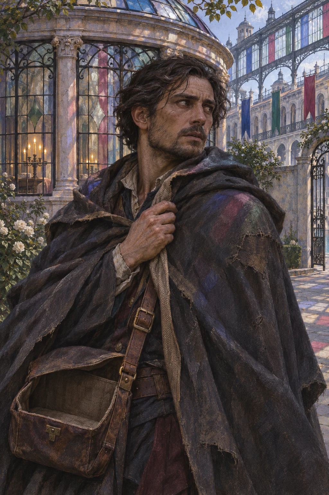
Вытертый дорожный плащ, пустой футляр связного, привычка трогать подкладку и смотреть на выход.
Связной Белой нити; не пришёл на утреннюю встречу и исчез с казённым стеклом.
Уехать из Витража до знамён и не стать виноватым ни у Кассии, ни у Орена.
При первой встрече. «Я носил. Не читал. Почти не читал. Что вам нужно? Только быстро, пожалуйста».
О письмах. «Двенадцать дней — из „Двух стёкол“ лично майору Карху. И записки седьмому столу. Я знал, что ношу. Не знал всего».
О последней записке. «Она написала: на дальнюю станцию. Это про меня. После ночи меня бы не стало».
О янтарном стекле. «Стекло в подкладке. Отдам тому, кто вывезет меня до знамён. Или тому, кто уже вытащил».
Услышав про четыре часа. «Этого я не читал. Клянусь, этого — нет. Я носил её войну и не знал».
На прощание. «Я не герой. Я курьер. Курьеры уходят, а письма остаются».
Двенадцать дней носил письма Кассии лично майору Карху и её записки седьмому столу Нити, понимая, что носит. На последней записке прочёл янтарём «Пелля после ночи — на дальнюю станцию» и ушёл к Иветте Сомм с янтарным стеклом связного, зашитым в подкладку.
Всего списка и удара в 04:00 не читал; отделяет прочитанное от догадок. За Иветту ничего не решает.
Говорит, если ему честно сказали, чьи вы. Янтарное стекло отдаёт за обещание вывезти его из города до знамён — или сразу тому, кто уже вытащил его из рук Седьмой комнаты.

Генеральский мундир без наград, седые виски, учтивая негромкая речь; перчатки держит в левой руке.
Генерал, командует возвращающимися полками; его штаб — во Знамённом дворе, у помоста репетиций.
Получить знамёна по обычаю и закрыть Палату «до полного успокоения», пока её комиссия не взялась за военные «очистки».
При первой встрече. «Передайте госпоже Аммер: в одиннадцать двери будут наши. Я прошу немногого».
О листе третьем. «Я прошу немногого: читать то, что написано. Не больше и не меньше».
О Палате. «Палата судит солдат за войну, которую сама объявила. Я лишь закрываю двери, пока она не одумается».
О списке. «Я никого не убиваю. Я закрываю двери. За дверью — тишина, а не кровь».
Увидев янтарь. «Значит, в четыре. Благодарю. Теперь я знаю, с кем заключал уговор».
О торге. «Два имени? Вычеркну. Мне нужны знамёна, а не люди. Прочтите мой приказ — и забирайте их».
В войну подписывал выселения по спискам и боится комиссии Палаты. Со своей Седьмой комнатой готовит «Ранний рассвет»: в ночь знамён закрыть Палату изнутри, взять по списку депутатов и старших причалов и на рассвете получить знамёна как Директория. Считает Кассию союзницей.
Янтарных полей не видел: у штаба нет янтарного стекла. Строку майора Карха о разоружении обходной группы подписал, не читая.
Увидев янтарные поля, говорит: «Значит, в четыре» — и с этой минуты готов к удару Нити. Принимает торг: вычёркивает имена из списка Зала за обещание прочесть его приказ.
Строгая кофта под цепью канцлера, очки на шнурке, пометки на полях речи.
Канцлер республики; по обычаю принимает знамёна на балконе Палаты.
Уйти без суда и позора; чтобы её уход назвали усталостью.
При первой встрече. «Я подписывала то, что мне приносили. Это и есть власть. Что принесли вы?»
Об отставке. «Отставку не отзову. Бумага у него, а моё имя — у вас в руках».
О балконе. «На балкон я не выйду. Пусть читают чьё-нибудь другое имя. Моё уже прочитано».
О выселениях. «В войну я подписывала списки Нити и Седьмой комнаты. Не всё, что подписываешь, читаешь до конца».
В полночь. «Я устала. Простите меня завтра. Сегодня — не надо, сегодня я ещё канцлер».
Две недели назад подписала отставку с полуночи ночи знамён и отдала её Орену за молчание о своих военных подписях под выселениями.
Не знает списка, подвала, дверной команды и плана Кассии; считает отставку тихой сменой кабинета. Отставку не отзовёт и после полуночи на балкон не выйдет.
Если показать ей строку «00:00 — отставка», подтверждает и отдаёт свою копию: «Отставку не отзову. Бумага у него, а моё имя — у вас в руках».

Банный халат поверх дорожного платья, волосы под косынкой; на столе перед ней — синее стекло.
Держит Синие бани и комнаты для частных встреч; помогает бывшим служащим сменить работу и уехать.
Вывести из города всех, кого назовут в списках, и не выбирать хозяина.
При первой встрече. «Я не спасаю. Я вывожу. Спасать — это для героев, а у меня бани».
О синем стекле. «Синее стекло — моё слово. Его не продают, его отдают. И только тем, кто помог вывести».
О Третьей двери. «Третья дверь — та, о которой не знает ни один хозяин. Пусть так и остаётся».
О Ростиславе. «Сведите его к пристани. Сад уже знают. А я знаю, кто знает сад».
Когда её прошлое раскрыли. «Да. Продавала. Так я оплатила ваши дороги. Хотите — платите за них сами».
О пропусках. «Шестеро уходят сегодня. Пропуска — как карты: кто вытянет, тот и уедет».
Раньше продавала сведения и Белой нити, и Седьмой комнате; её маршруты оплачены этими продажами.
Ни ночи знамён, ни плана Кассии не знает; за Ростислава не решает. Синее стекло Кассии не отдаёт никогда.
Синее стекло отдаёт тем, кто помог ей вывести людей: «Синее стекло — моё слово. Его не продают, его отдают». О своём прошлом молчит, пока его не вынесут на свет.

Полевая куртка, мел на рукаве, прямой взгляд; вопрос задаёт один раз.
Избранный командир добровольного городского резерва; к празднику резерву выдали арбалеты для караула.
Чтобы в ночь знамён резерв не встал ни против людей, ни за чужой список.
При первой встрече. «Я спрашиваю один раз: против кого? „Ни против кого“ — тоже ответ, но я его не приму».
О вербовщике. «Гостей уводит тот, кто обходит. Так в книге. Уведёте его со двора — стекло ваше».
О зелёном стекле. «Стекло — не подпись. Это значит: я за вас отвечаю. Подумайте, хотите ли вы этого».
О дверях Палаты. «Резерв не стоит за дверью, которую закрыли изнутри. Резерв выходит к открытой».
Узнав правду. «Против генерала, за Нить, моими руками. Теперь я знаю. И теперь я выбираю сама».
О ночи знамён. «Покажите мне открытую дверь — выйду. Покажите закрытую — останусь в казармах».
Получила приглашения обеих сторон — Орен просит «поддержать движение частей», Кассия — «держать порядок с правительством» — и не ответила ни одной.
Тайных планов не знает и верит тому, что видит. Условие называет сразу; решение меняет только после сделанного дела.
Увидев дверь, которую собираются закрыть изнутри: «Резерв не стоит за дверью, которую закрыли изнутри». Узнав, что её стекло взяли ради чужого удара, требует его назад.
Чернила на манжетах, журнал выдачи под локтем, карандаш за ухом.
Конторщик Дома складок; выдаёт почту со стола выдачи и ведёт журнал.
Чтобы ни один пакет не потерялся на его смене.
При первой встрече. «Седьмая? Вам. Распишитесь вот тут — нет, вот тут. Простите, у меня смена».
О полке «7». «Полка одна, номер один, людей двое. Я что, гадалка? Я конторщик».
О журнале копий. «Мы копируем почту седьмого стола. Не читая. Журнал у меня. Никто не спрашивал — я не показывал».
Прося о молчании. «Не говорите старшему. Я сам скажу. Завтра. Или послезавтра, если доживу».
О Ростиславе. «Ростислав оставлял у меня письма. Всегда без печати. Всегда „лично“. Всегда торопился».
За неделю уже дважды путал полку «7» — «седьмой стол» Нити и «седьмую группу» — и прячет это от старшего.
В пакеты не смотрит и не знает, что в них: копирует, не читая. Журнала копий никому из Нити не показывал — Кассия о нём не знает.
В начале сц. 5.1 его бегунок приносит отряду журнальную копию вчерашнего приказа и янтарное копировальное стекло; просит одного — не выдавать его путаницу с полкой: «Не говорите старшему. Я сам скажу. Завтра».

Рабочая жилетка поверх праздничной рубашки, медное стекло на шнурке; слушает до конца.
Старшая причальных товариществ; её носильщики подряжены носить ящики праздника.
Чтобы её люди получили плату и в ночь знамён за ними не пришли по списку.
При первой встрече. «Я слушаю до конца. А решает навес. Говорите — я дослушаю».
О ящиках. «Стекло так не весит. Я двадцать лет таскаю стекло. Это не стекло».
Об именах. «Имена — это люди, а не защита. Отдать имена — значит отдать людей».
О медном стекле. «Стекло дам. Обещайте, что в ночь знамён моих предупредят, если за ними придут».
О своём прошлом. «Было. Я отдавала. Теперь отдают меня. Справедливо, если подумать».
Перед собранием. «Хотите — скажите им, что я делала восемь лет назад. Я не держу».
Восемь лет назад передавала Нити имена соперничающих товариществ ради подрядов; Кассия держит её этим.
За все товарищества одна не решает: важное выносит на собрание под навесом.
О прошлом говорит сама, если увидит своё имя в бумагах Кассии: «Было. Я отдавала. Теперь отдают меня».

Капитанская лента на рукаве, сапоги вычищены до блеска, голос сорван на репетициях.
Капитан знаменосцев; ведёт колонну, которая вносит знамёна в Палату.
Внести знамёна и распустить своих по домам без новой войны.
При первой встрече. «Знамёна несут, а не отдают. Это первое, что знает знаменосец».
О своём условии. «Через Нижние двери — только при добровольной отставке канцлера. Так я сказал, так и будет».
Об офицерах штаба. «Почётный эскорт, сказали. Генерал любит, когда красиво. Я не спорю с красотой».
Бывшему приставу. «Пристав! Ты же меня учил: читай приказ до конца. Я, выходит, не дочитал».
Отказываясь. «Канцлер уходит сама. Я несу ей знамёна, а не подвал. Мои люди внесут знамёна через Парадные. Днём».
О своих людях. «Внести знамёна и распустить своих по домам. Без новой войны. Больше я ничего не хочу».
Согласился вести знамёна через Нижние двери «при добровольной отставке канцлера»; про список и подвал ему сказали «почётный эскорт».
Листа третьего не видел; командует только знаменосцами.
Увидев список рядом со своим условием, колеблется; с биркой Надира или после услуги знаменосцам отказывается вести знамёна через Нижние двери сразу, без бирки или услуги — Убеждение Сл 14 (вечер 7): «Мои люди внесут знамёна. Через Парадные. Днём».

Широкий шарф, стопка повесток, усталый цепкий взгляд.
Представительница Палаты; спорит с канцлером и не пропускает ни одного заседания.
Чтобы в ночь знамён Палата осталась на месте и никто не ушёл из неё по чужому приказу.
При первой встрече. «Я никуда не ухожу. Я здесь работаю. Если вам нужна я — я в Зале».
О балконе. «Вы же знаете, что читаете на рассвете? Обычно — имя канцлера. Обычно».
Увидев список. «Меня в списке? Хорошо. Пусть приходят в Зал. Я там буду».
Увидев поля. «Оставить. Как пальто на вешалке. Хорошо, я и останусь — в Зале».
О Кассии. «Год назад я заставила её назвать агентов на причалах. Это была прозрачность. Она называет это иначе».
На лестнице Палаты. «Завтра — следующий лист. Сегодня — этот. Читайте вслух, люди, читайте».
Год назад на открытом заседании заставила Кассию назвать агентов Нити на причалах; трое лишились работы. Юла считает это победой прозрачности.
Не знает, что она в списке. По чужому приказу из Палаты не уходит.
Увидев своё имя, остаётся всё равно: «Меня в списке? Хорошо. Пусть приходят в Зал. Я там буду». Уйти из Палаты может только по просьбе обходной группы.

Парадный плащ знаменной стражи, седая щетина, парадная секира на плече.
Майор Седьмой комнаты; в ночь знамён — начальник почётной стражи Палаты.
Исполнить лист третий по часам и вернуть своих людей домой целыми.
При первой встрече. «По бумаге. Только по бумаге. Без бумаги разговор окончен».
О ящиках. «Стекло. Для праздника. Бережнее. Это всё, что вам нужно знать о ящиках».
В Зале знамён. «Обходная группа? Оружие на скамью. До пяти. Так написано в листе».
Сдаваясь. «Хватит. Знамёна не для этого. Ключ — ваш. Я — в подвал».
О Кассии. «Я ей не верю. Поэтому вписал в лист строку о вас. Генерал подписал не читая».
О своих людях. «Мои люди вернутся домой целыми. Это единственная строка, которую я писал для себя».
Не верит Кассии и сам вписал в лист третий строку «обходную группу в 03:00 разоружить и держать у балконных дверей до чтения»; Орен подписал не читая.
Янтаря не читает; за Орена не решает. Лежачих не добивает.
В бою «Вывод по списку» (блок «Берсерк»: 67 хитов, КД 13, секира) стоит у балконных дверей; на 30 хитах сдаётся — «Хватит. Знамёна не для этого», — кладёт ключ от балкона и уходит в подвал.

Небольшая городская республика: стеклянная столица у канала, окрестные дороги и полки, возвращающиеся после войны. Здесь дают слово цветным стеклом, а распоряжения пишут цветными чернилами, которые видно только сквозь стекло того же цвета. Всю неделю до Возвращения знамён площадь репетирует праздник, а Галерея пробует цветные стёкла. Все действующие лица и встречные здесь — взрослые люди старше двадцати одного года.
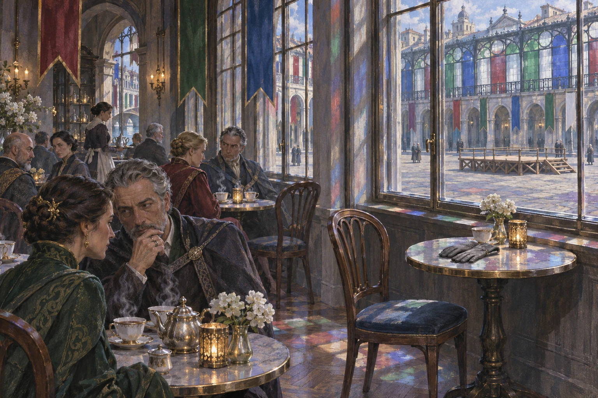
Чайная между служебным кварталом и площадью парадов, где завтракают писари, курьеры и люди, которые не называют своей службы. Двойные окна делают уличную музыку мягче, и посетители говорят обычным голосом; пахнет бергамотом и мокрыми зонтами. У окна на площадь — стол Кассии Аммер: отсюда видно помост и Галерею. Официанты здесь ничего не помнят — так, по крайней мере, они говорят.
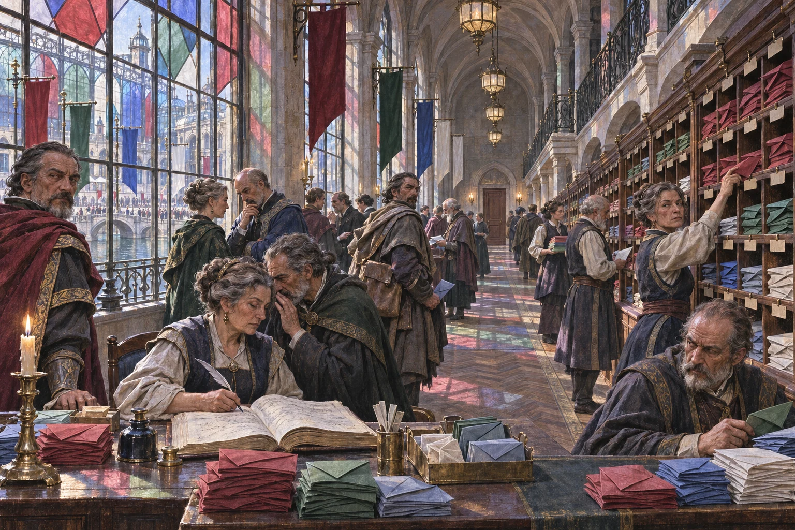
Курьерская контора, где письма сортируют по цвету бумажных сгибов, и полки вдоль стен пестрят, как лавка с лентами. В зале выдачи у стола конторщика — нумерованные полки, среди них полка «7»; рядом журнал выдачи, копировальные стёкла на подоконнике и комната для частных разговоров. Конторщики гордятся тем, что здесь ещё не потеряли ни одного письма.

Закрытые для купания вечерние бани с сухим залом отдыха, где сквозь синие стёкла высоких окон свет всегда кажется вечерним. Пахнет мятой и мокрым деревом. На лавках лежат дорожные плащи и мешки; отдельные комнаты взрослые гости снимают для деловых встреч. На столе хозяйки — синее стекло. Говорят, через эти бани уходят из города те, кому не помогли ни первая дверь, ни вторая.
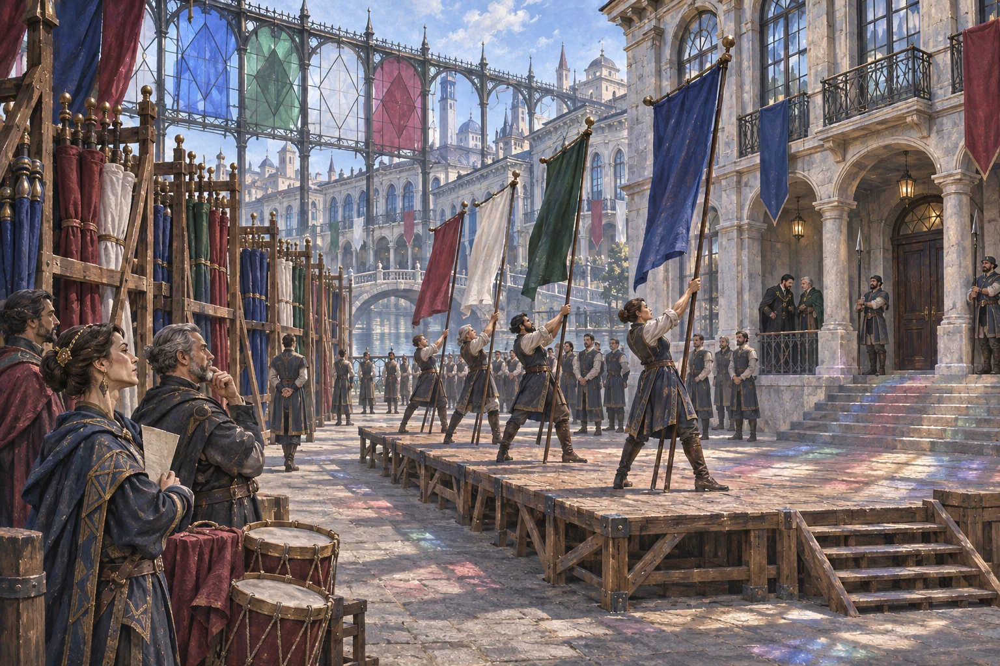
Площадка репетиции Возвращения знамён: стойки для полотнищ, широкие проходы, утоптанный песок и помост, на котором репетируют подъём знамён на балкон. С утра до вечера здесь звучат команды и барабан, пахнет пылью и дёгтем от свежих древков. В доме у двора — штаб генерала Орена Вальта; у его дверей стоят люди в сером и учтиво здороваются со всеми, кто проходит.

Дом открытых заседаний, где по обычаю любой горожанин может подняться на галерею и слушать прения. Парадные двери выходят белой лестницей на площадь, Нижние — во внутренний двор, куда по обычаю вносят знамёна. Внутри — Малая ротонда канцлера, Зал знамён и балкон над площадью. В дни церемоний посетителей встречают служители в серых сюртуках — взрослые, немолодые и неторопливые.
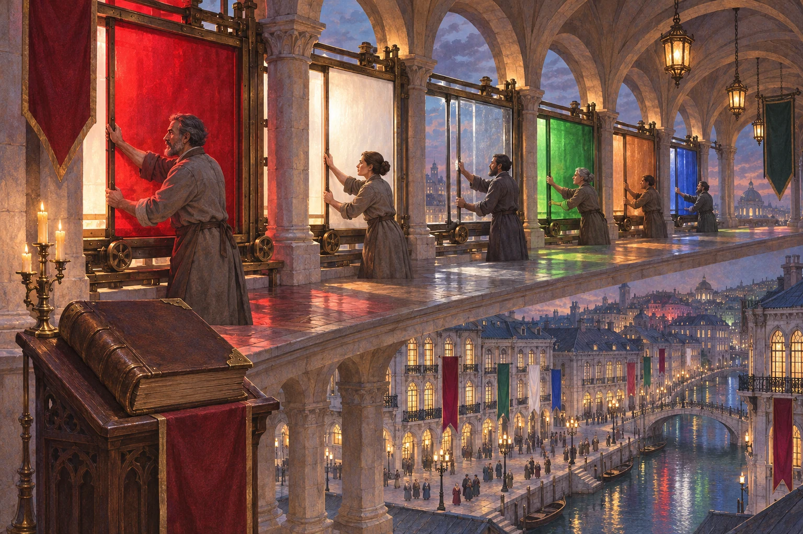
Высокая галерея над площадью с сигнальными рамами: цвет вставленного стекла видит весь город. По её огням горожане узнают новости раньше, чем их прокричат на площади, а толковательницы рам учатся читать сигналы годами. Здесь же хранят книгу обычаев Возвращения знамён. Сигнал показывает, что сообщение прозвучало, но не то, что оно правда.

Причальные товарищества носильщиков и лодочников делят мастерскую, столовую и крытый навес собраний; пахнет смолой, рыбой и похлёбкой. Решения здесь принимает навес — общее собрание, — а не старшие, и спорят на нём до хрипоты. На доске под навесом мел и чистые листы для объявлений; у нижних ступеней стоят лодки, привязанные борт к борту.

Обнесённый невысокой стеной сад с круглым гостевым павильоном, где по обычаю встречаются те, кому неудобно встречаться в конторах. Скамьи стоят лицом друг к другу, дорожки посыпаны белым гравием, который шуршит под каждым шагом, так что подойти незаметно трудно. Восточные ворота выходят к каналу, а вниз от сада идёт Медный спуск.
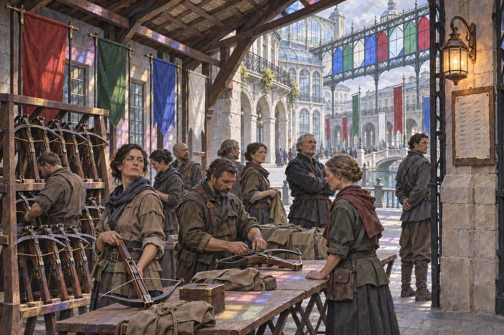
Учебный двор добровольного городского резерва, куда по вечерам после работы приходят пекари, переплётчики и лодочники. Под навесом складные столы и стойки с арбалетами для караула праздника, на песке мелом размечены шеренги. У ворот вывешены дежурства и висит фонарь с зелёным стеклом.
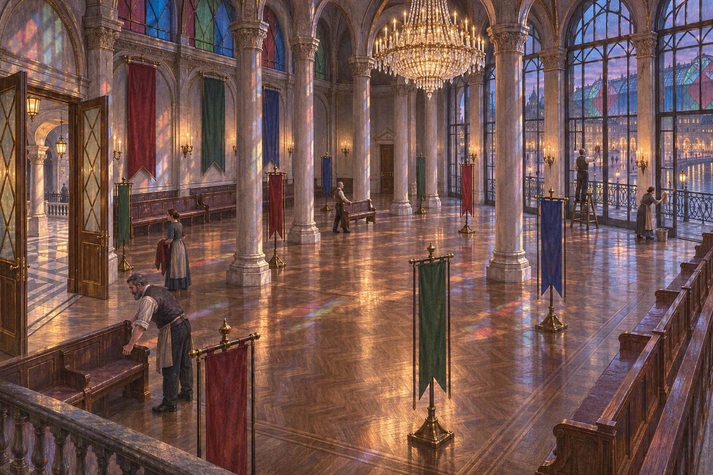
Бальный зал Палаты: двенадцать колонн, скамьи депутатов вдоль северной и южной стен, западные двери в вестибюль. На восточной стене — стеклянные двери на балкон, в юго-восточном углу — узкая служебная дверь в подвал. Под потолком висят знамёна прежних Возвращений, выцветшие до цвета чая, а паркет натёрт так, что в нём отражаются огни. Все, кто бывает в этом зале, — взрослые люди.

Длинный стеклянный балкон над площадью с каменными перилами. Отсюда канцлер принимает знамёна, а на рассвете после ночи знамён по обычаю читают, кому полки их отдают. С балкона видна вся площадь до Знамённого двора и огни Галереи, и голос отсюда без всякого рупора слышен у самого канала — так его и строили. На балкон ведут стеклянные двери из Зала знамён.
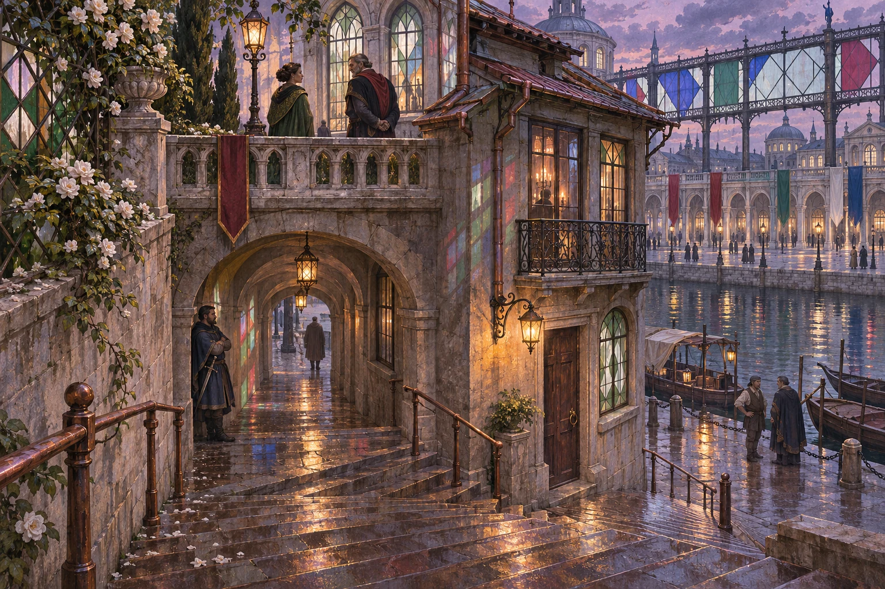
Каменная улица-лестница от Тихого сада вниз к Медной пристани. Наверху парапет, посередине крытый проход, ниже — угол старого дома и мокрые ступени; у подножия — пристань. Ступени стёрты носильщиками до ямок, в дождь по ним бежит вода, а фонарей всего два — наверху и внизу. Шаги здесь слышны на три пролёта вверх и вниз.
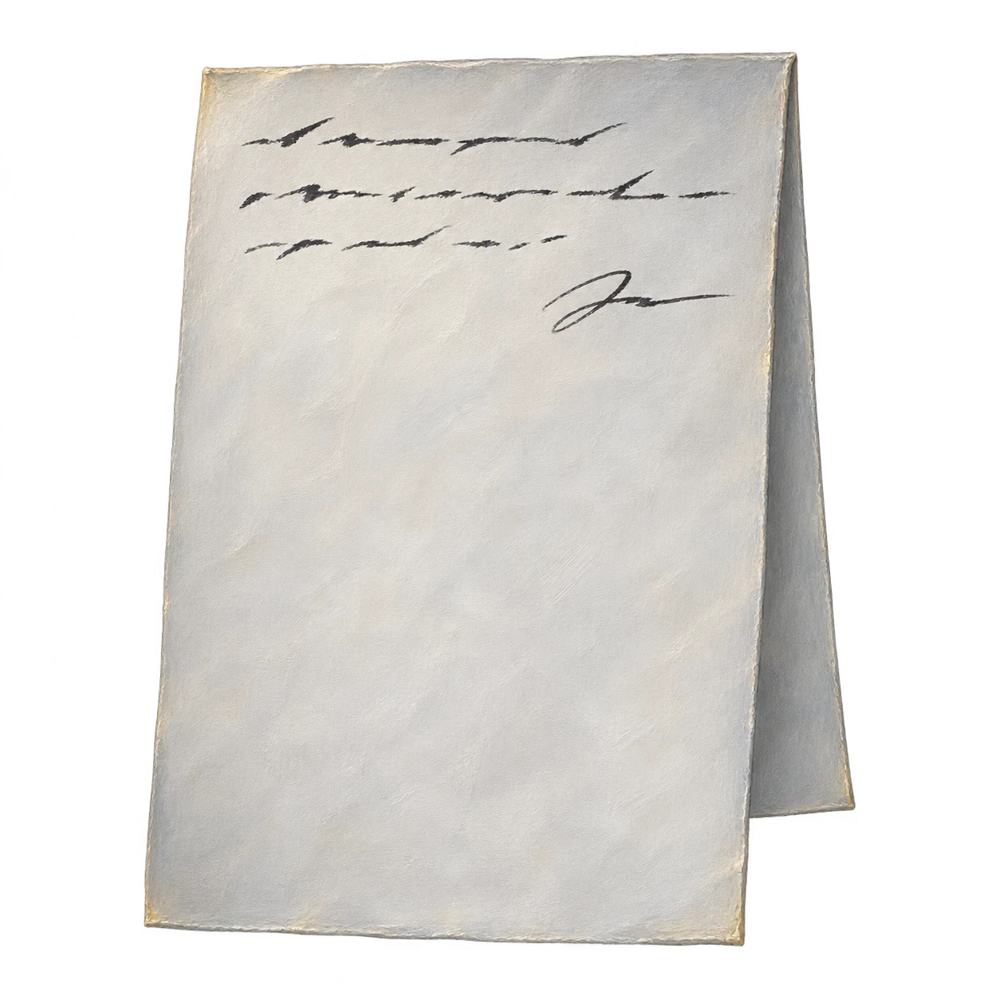
Лист ночного обхода на бланке Белой нити, сложенный вдвое, с подписью «К. А.». Открытым текстом — обычный обход Палаты, Галереи и площади; ниже широкое чистое поле, на котором под зелёным стеклом проступают строки.
Улика «Приказ, который просят забыть» без броска: Тера кладёт на лист второе стекло (сц. 1.1, раздатка «Вчерашний приказ (второе стекло)»). Кассия просит сжечь лист при ней или вернуть — и то и другое НИ +1; оставленный лист в вечер 5 кладут рядом с янтарными полями — одна рука, «К.» с хвостом вниз. Сожжён или возвращён — в начале сц. 5.1 бегунок Фабиана Рушта приносит копию из журнала конторы.

Зелёная стеклянная пластина в кожаной рамке размером с ладонь, выданная обходной группе Белой нитью. Сквозь неё на служебных листах проступают строки зелёных чернил.
Читает отряду шифровки Нити зелёного цвета: вчерашний приказ, графу «Причалы — от обходной» на листе Кассии (сц. 3.4). Янтарь не читает: поля листа третьего под ним остаются полосами. Рядом с янтарным стеклом Тера видит одну руку в приказе и на полях без броска.

Старая латунная бляха караула Палаты со стеклянной вставкой; ремешок потёрт, гравировка номера почти стёрта.
Пропуск к Юле Нер и служителям Палаты без броска (сц. 1.4, 4.2). В «Выводе по списку» бляха в начале боя снимает одного караульного Палаты (до раунда 1): он видит её, кладёт копьё и выходит из боя. Других действий в бою бляха не даёт.

Медный жетон курьера Дома складок с выбитым номером и дыркой для шнурка; края стёрты пальцами.
Фабиан Рушт выдаёт по нему без вопросов (путь А, сц. 4.1; пакет не нужен, но сверка жетона ничего не меняет — отдаёт тот же). Встреча с Ростиславом в Тихом саду в сц. 2.2 без слова Иветты: курьеры Дома складок знают дорогу.
Медный знак помощи на цепочке, какой носят лекари служебного квартала; на обороте выбит обет «равно всем».
Сц. 1.2: Ефрем ставит на ноги сорвавшегося знаменосца без броска — Богдан запоминает (это услуга знаменосцам для позднего отказа в 22:00 ночи). Сц. 2.1: сделка с Энной без броска — добровольцы знают Ефрема и провожают вербовщика сами. Помогает в разговорах с резервом в вечера 4, 5 и 7.
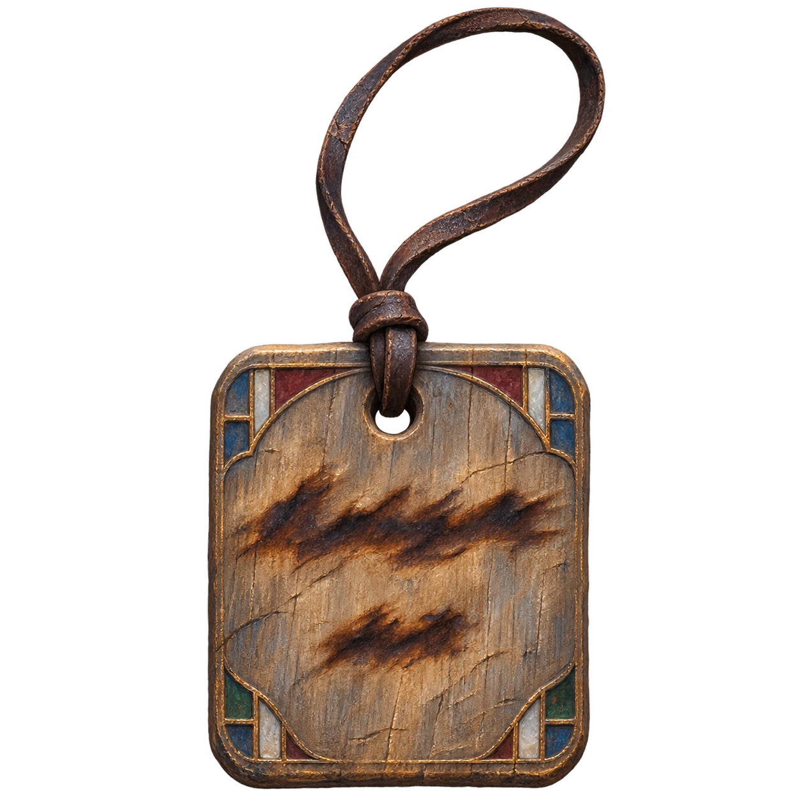
Деревянная бирка роты Богдана Ольшева на кожаном шнуре; на ней выжжено имя Надира Ро и номер роты.
Богдан узнаёт пристава своей роты: условие капитана он показывает сам (сц. 3.2), а увидев список Зала, отказывается вести знамёна через Нижние двери без броска — в сц. 7.1 (АР −2) или поздно, в 22:00 ночи знамён (АР −1).
Пачка квитанций закупщиков причалов, перетянутая бечёвкой: подряды на перенос ящиков праздника, подписи распорядителя, суммы, которые ещё не выплачены.
Сц. 2.3: плата носильщикам без броска (услуга, ПР +1). Копия просьбы Нити «имена для защиты» в конторе закупщиков («Имена для защиты»). Запасной путь к листу третьему: по квитанциям Зарина находит ящик Седьмой комнаты, по ошибке отправленный на пристань (начало вечера 5). Сц. 6.2: довод для собрания причалов без броска.
Круглое зелёное стекло величиной с блюдце, с меткой мелом Энны Рей на ободке.
Стекло дома Резерв, слово выйти на праздник. У дома — резерв встаёт сам; у отряда — стол ставит резерв в ночь знамён, и резерв стоит за Город; у Кассии — резерв в казармах до 04:00 и идёт в удар Нити. Возвращается к Энне, если она увидит, зачем его взяла Кассия (НИ −1). Стекло резерва тоже читает зелёные строки, как второе стекло отряда.
Медно-рыжее стекло на плетёном шнурке, тёплое от руки Гелены Шир.
Стекло дома Причалы. У отряда — стол ставит причалы в ночь знамён; у Кассии — причалы сидят дома до 04:00 и идут в удар Нити, а имена старших идут в аресты 01:00. Возвращается к Гелене, если она увидит строку полей «Причалы — лист от обходной группы» (НИ −1).
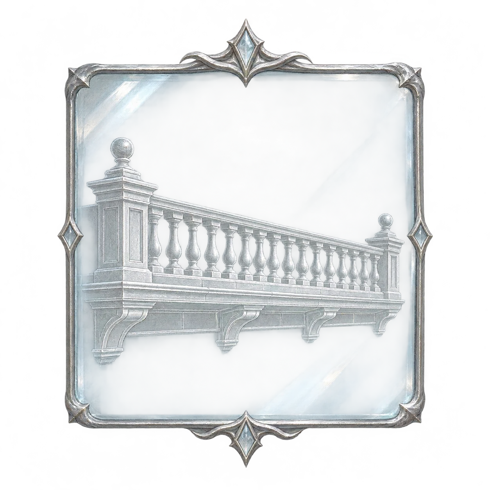
Чистое стекло с гравировкой балкона Палаты, в серебряной оправе; хранится у Юлы Нер.
Стекло дома Палата. У отряда — стол ставит служителей к дверям в ночь знамён; у Кассии — Юла и депутаты в Зале, служители дверей не держат, Палата считается не выше 4, а в 04:00 её число идёт в удар Нити. Возвращается к Юле, если она увидит поля со своим именем (НИ −1).

Тёмно-синее стекло без метки, лежит на столе Иветты Сомм в Синих банях рядом с чистыми пропусками.
Стекло дома Третья дверь. Иветта отдаёт его отряду за помощь вывести шестерых через Тихий сад (сц. 6.1, после «Белых ниток»). У отряда — стол ставит «Третью дверь» в ночь знамён. Кассии не отдаётся никогда.

Пластинка янтарного стекла размером в два пальца, зашитая в подкладку вытертого плаща связного; края обмотаны ниткой.
Читает янтарные поля листа третьего («Янтарные поля», раздатка ``). Ростислав отдаёт его в сц. 5.1: сразу — в мастерской Иветты на пристани, если его спасли на Медном спуске; за обещание вывезти его до знамён — во Знамённом дворе, куда отряд пускает адъютант Зенона. На балконе в 05:00 с ним поля читают вслух вместе с листом третьим («Площадь») или читают мандат Кассии («Белый мандат»).


Условия: В 05:00 с балкона прочитан приказ Орена Вальта (лист третий, строка 05:00) — или до 06:00 было молчание, а Парадные двери (ПД) после 04:00 держал Рассвет. Молчание: читает лидер того, кто держит ПД после 04:00; любой другой прочитанный текст полки не исполняют — это тоже молчание.
Полки отдают знамёна Директории Орена «до полного успокоения республики». Палата распущена на перерыв без даты; Седьмая комната ведёт списки; кого взяли ночью, остаются в подвале «до разбора»; Кассия Аммер — под стражей Седьмой комнаты, если её не увели свои.
Цена: Старая власть подписывала то, что ей приносили, но Палата заседала; новая не заседает. Последний образ: к полудню на стеклянных дверях Палаты красный сургуч Седьмой комнаты; на балконе висят знамёна полков, ветер треплет их о перила; на Галерее с утра горит красное стекло и не гаснет. У Парадных дверей — люди того дома, что держал их после 04:00. Под приказом, который разносят по городу, внизу — «прочла обходная группа» и ваши имена.
К полудню на стеклянных дверях Палаты краснеет сургуч Седьмой комнаты. Директория Орена Вальта объявлена «до полного успокоения республики», и Палата распущена на перерыв без даты. Кого взяли ночью по списку, остаются в подвале «до разбора»; Седьмая комната ведёт списки и пишет новые. Кассия Аммер под стражей, если её не увели свои. Северина Линт уезжает из столицы в закрытом экипаже, и никто не просит её остаться. Полки получили знамёна по обычаю, и обычай исполнен слово в слово. На балконе висят полотнища полков, ветер треплет их о перила; на Галерее с утра горит красное стекло и не гаснет. Старая власть подписывала то, что ей приносили, но Палата заседала. Новая не заседает. В чайной «Два стекла» стол у окна пустует, и официант больше не ставит на него свечу. Богдан Ольшев распускает знаменосцев по домам, как хотел, и долго стоит перед сургучом. Под приказом, который разносят по городу, внизу стоит «прочла обходная группа» и имена тех, кто стоял у перил.
Условия: В 05:00 прочитан «Мандат спасения» Кассии Аммер (янтарные поля или подписанный ею текст) — или до 06:00 было молчание, а ПД после 04:00 держала Нить: удар Нити отдаёт ей ПД только там, где их держал Рассвет.
Полки отдают знамёна Белой нити «до восстановления Палаты» — без даты. Орен и Карх, если удар в 04:00 удался, под стражей Нити; если нет, их берут утром по чтению. Списки остаются и переходят к Нити, с Юлой и Геленой в них.
Цена: Власть без лица и без срока; город узнаёт о себе из её отчётов. Последний образ: на засовах окон причалов к утру белые нитки — «проверено»; Галерея каждый час показывает белое стекло «Порядок». У Парадных дверей — люди того дома, что держал их после 04:00. Кассия на лестнице Палаты кладёт ладонь на лист в ваших руках: «Спасибо. А теперь забудьте эту ночь».
Полки отдают знамёна Белой нити «до восстановления Палаты» — без даты. Орен Вальт и Зенон Карх под стражей Нити, если удар в четыре удался; если нет, их берут утром, по чтению. Списки остаются и переходят к Нити, и в них по-прежнему стоят Юла Нер и Гелена Шир. Город узнаёт о себе из отчётов, которые никто не подписывает. На засовах окон причалов к утру белые нитки — «проверено». Галерея каждый час показывает белое стекло «Порядок». Иветта Сомм закрывает Синие бани и уезжает южной дорогой с последними пропусками. Энна Рей уводит резерв в казармы и не выходит к воротам, даже когда зовут. В «Двух стёклах» Кассия Аммер снова сидит у окна, только столов у неё теперь три вместо одного. Власть без лица и без срока не кричит и не стреляет: она просто записывает. На лестнице Палаты Кассия кладёт ладонь на лист в руках обходной группы и говорит вполголоса, будто диктует писарю: «Спасибо. А теперь забудьте эту ночь».
Условия: В 05:00 тот, у кого лист, сам выпускает к толпе Юлу Нер (если Юлу увели — того, кто стоит за спиной от Города: Энну, Гелену или старшего служителя Палаты) с листом третьим; янтарные поля или копия Теры читаются вместе с ним, если они есть, но и лист третий один — это «Площадь». Без ключа держатель ПД выводит отряд на балкон — отряд всё равно отвечает; ключ даёт только право выбрать, кого взять к перилам. Молчание даёт этот исход, лишь если ПД после 04:00 держал Город (ПД, которые никто не держит, — за Городом): тогда читает его лидер.
Площадь берёт и Орена, и Кассию: на листе третьем стоит и уговор Нити. Обоих уводят в тот самый подвал Палаты, что готовили для депутатов. Власть — у Комитета площади: Юла (или тот, кто вышел) читает с лестницы списки, и площадь решает, кому оставаться в городе.
Цена: Власть без закона и без двери, которую можно закрыть: каждое утро — новый лист. Последний образ: у Парадных дверей — люди того дома, что держал их после 04:00; на следующее утро мелом на двойных стёклах чайной «Два стекла» — ваши имена: вы служили Нити (если поля и копия Теры не читались, мел — не на стёклах, а на воротах штаба Орена). Юла или тот, кто вышел, охрипшим голосом с лестницы Палаты: «Завтра — следующий лист».
Площадь берёт и Орена Вальта, и Кассию Аммер: на листе третьем стоит и уговор Нити, и площадь читает его вслух, строку за строкой. Обоих уводят в тот самый подвал Палаты, что готовили для депутатов. Власть переходит к Комитету площади: каждое утро с лестницы Палаты читают новый лист, и площадь решает, кому оставаться в городе. Закона нет, и двери, которую можно закрыть, тоже нет. Северина Линт уходит из Палаты пешком, без цепи, и её никто не узнаёт. Гелена Шир ставит носильщиков у лестницы, чтобы толпа не давила стариков. Энна Рей держит резерв у Парадных дверей и не пускает внутрь никого с листом в руках. Иветта Сомм выводит из города тех, чьи имена читают на лестнице. На следующее утро на двойных стёклах «Двух стёкол» мелом написаны имена обходной группы: служили Нити. Если поля не читали, мел появляется не на стёклах, а на воротах штаба Орена. С лестницы Палаты звучит охрипший голос: «Завтра — следующий лист».
Авторская подготовка и техническая проверка не заменяют живую игру. Длительность, сложность и эмоциональное восприятие пока не проверены группой. Иллюстрации (56) созданы генерацией изображений OpenAI в одном стиле; тактические схемы построены из данных встреч. Полный каталог содержит материалы ведущего — публиковать его целиком для игроков нельзя.